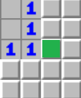
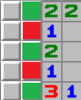
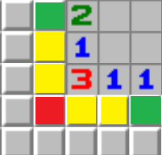
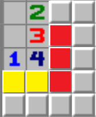
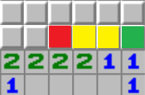
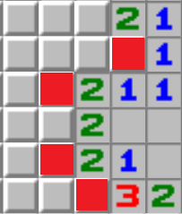
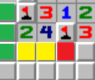

Zasady Gry Saper
Celem gry Saper jest odkrycie wszytskich kafelków, które nie są minami
- Odkrywanie pól:Kliknięcie lewym przyciskiem myszy odkrywa pole. Jeśli odkryte pole jest miną, gra kończy się przegraną
- Odkryte pola:Gdy kafelek jest odkryty i na tym polu nie znajduje się mina, na tym polu wyświetli się liczba od 1 do 8 lub pustę pole. Cyfra na kafelku oznacza ile min znajduję się w sąsiectwie tej cyfry.
- Oflagowanie min:Gdy zyidentyfikujemy pole na który napewno znajduję się mina, możemy ją oznaczyć flagą. Pole można oznaczyć flagą przez kliknięcie prawym przyciskiem myszy. Flaga zapobiega przypadkowemu kliknięcie w minę
- Zwycięstwo:Gracz wygrywa gdy odkryję wszytskie pola nie będące minami
Historia sapera
Przykładowe Aplikację z grą Saper
Zagraj w sapera
Jak być lepszym?
Aby być lepszym w grze Saper, warto nauczyć się rozpoznawać typowe wzorce liczbowe na planszy. To pozwala na lepsze planowanie ruchów i zwiększa szanse na zwycięstwo.
Niestety rozpoznawanie wzorców nie zawsze grawantuje zwycięstwo. W wielu sytuacjach nie ma lepszej opcji i trzeba zgadywać, gdzie znajduje się mina.









